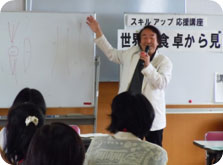
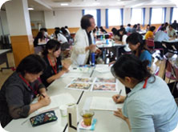

|
|
■講座 テーマ「世界の食卓から見た日本の食」 講師：千葉 保氏 (元小学校長国学院大学文学部兼任講師) ＜概 要＞ はじめに、人と対話をすることは、仲間や自分の新しい考えを引き出しそして発展させ、そのことが勉強から学びへと変わっていきますと話されました。 その後、4家族の1週間分の食料と家族の写真A～Dが配られ、まず、どこの国の家族なのか、1週間分の食費はどのくらいなのか、それぞれを比較してみて見えてくること、想像できる悩み等、4～5人のワークショップ形式で次々にみんなで考えていきました。先生から解答が配られ、さらに見えてくること、感じたことを話し合いました。その他に、先生が書かれた本｢コンビニ弁当16万キロの旅｣の中から、フード・マイレージやバーチャルウォーターについて、また、人間は12歳までに培った味覚が一生のもので、子供の食習慣が重要ですお話されました。日本の食料自給率も踏まえ、日本はこれからどう進んで行ったらいいのかも考えました。 ※意見交換(○は質問、→は回答) ○アメリカの食卓についての経済状態やこれからの方向性など教えてください。 →貧困層の人々の食生活は、手軽で安価な食べ物としてハンバーガーなどをよく食べています。安価なものは高エネルギーのものが多く、不健康な肥満が低所得者には多く見られ、ますますその傾向は高くなると思われます。 ～参加者の感想～ ・生協の方とグループでの話し合いができたのがよかったです。 ・1週間の食費が150円に満たないところもあり、自分たちがいかに豊であるかを感じました。だからこそ健康を考えた“食”を選んでいこうと思いました。 ・家庭での食事を見直す良いきっかけになりました。食育は子供のころから話し続けることが大事ですね。 ※他にも、たくさんの質問や感想をいただきました。 |